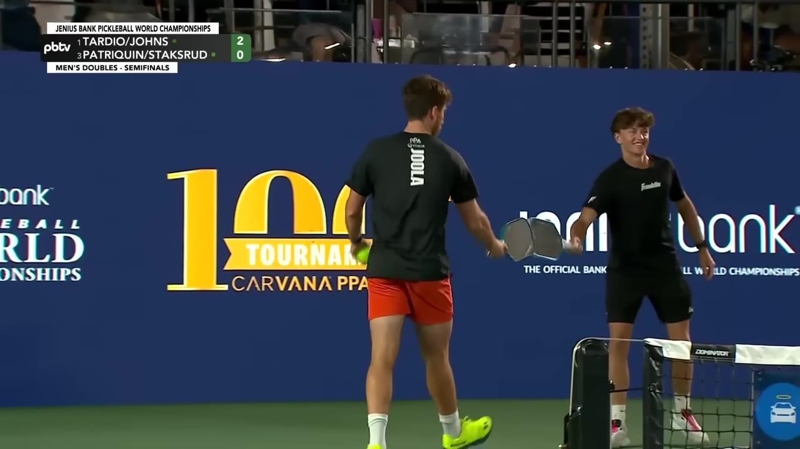
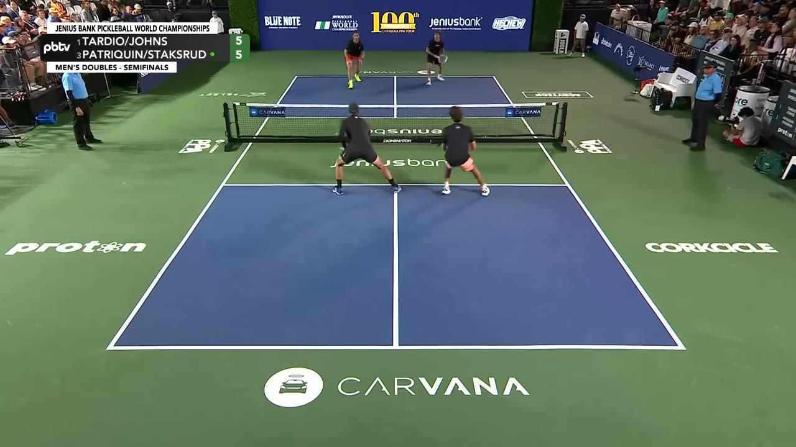
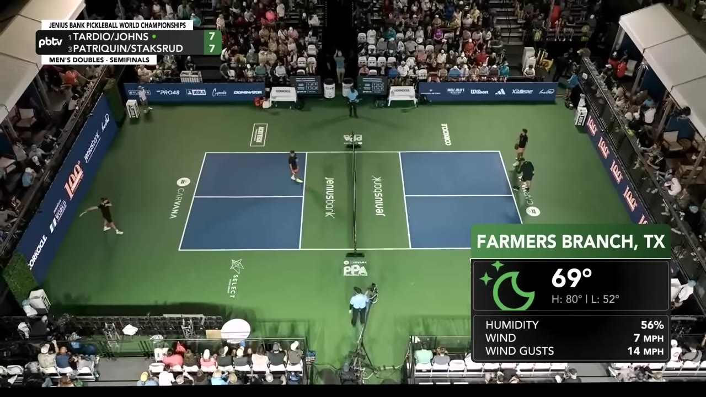
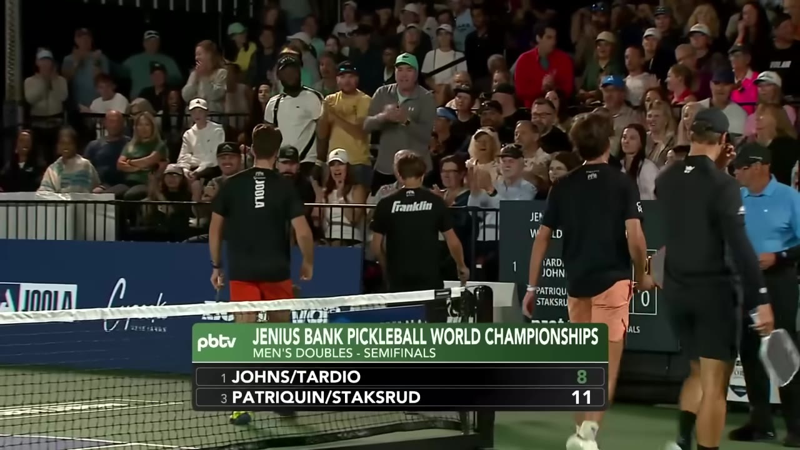
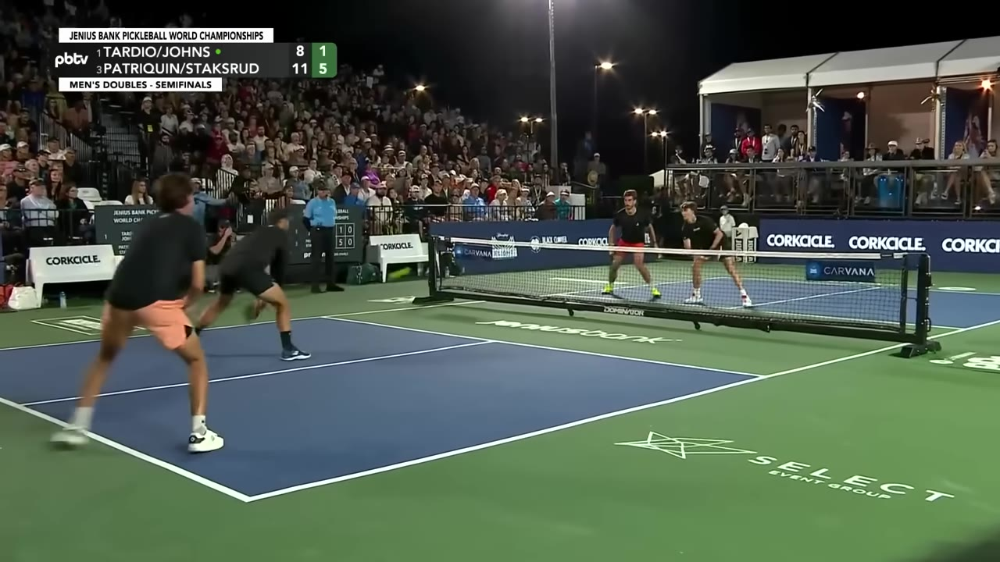
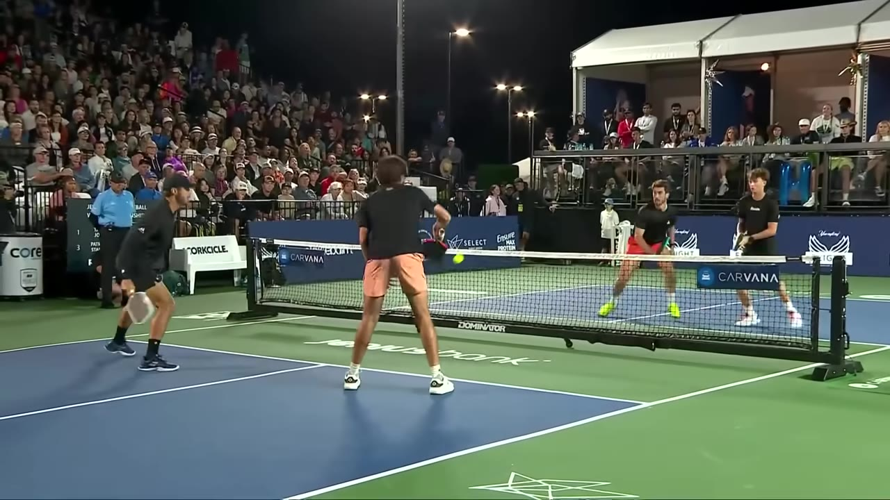

Men's doubles semifinal from the Jenius Bank Pickleball World Championships — the No. 3 seed of Hayden Patriquin and Federico Staksrud knocks out top seed Ben Johns and Gabe Tardio in straight games, in gusting wind that turned reading the air into a weapon.
Watch on YouTubeMen's doubles semifinal at the Jenius Bank Pickleball World Championships. No. 1 Ben Johns and Gabe Tardio across the net from No. 3 Hayden Patriquin and Federico Staksrud — and there's miscommunication on the very first rally, both fellas leaving a ball in the left.

Patriquin and Staksrud came in as a team that had recently changed locations on the court — and it's working. They barely snuck by Martinez Vic and Trunk 12-10, 12-10 in the round of 16, then handled the quarters five and two.
A real tactical aside between points: why do the longer firefights show up more with the women than the men?

I think it's the ability of the fellas to really punch from the chest with the backhand — and just a hint of extra power. And they're tighter to the line.— Color commentary
Through game one the air starts moving. "For the first time in five hours, I'm feeling wind in my face up here." Balls that used to sit are now drifting.

Staksrud is leaning on a forehand dink slice off the bounce almost exclusively, and it's pulling errors out of Tardio. Patriquin, meanwhile, is covering the kitchen line so well that everything funnels to him to do his thing on both wings.
I am so jealous of that man's footwork. I think every player on tour is.— Color commentary
Game one goes to Patriquin and Staksrud, 11-8. Johns and Tardio had dropped game one to a different pairing the day before and battled back, so the template exists — but the wind is now firmly in Patriquin and Staksrud's plan, not their face.

Game two gets lopsided fast. Staksrud is on top of these counters — the whole key is getting the ball down, and he's done it the entire match, including five or six backhand counters that look like he's almost falling down.

It doesn't look perfectly athletic, but it's perfectly amazing.— Color commentary
The Ernie fakes pile up — Staksrud throwing 15 or 20 looks before Johns finally gives him the one. Johns and Tardio start gifting points back with overhits into the wind.
The clincher is a wind read. Staksrud just throws a ball into the corner, knowing it'll land — "as smart a shot as you will ever see" — then smacks one through the middle.

And they've done it. They are riding the win to Sunday. Patriquin and Staksrud knock out the sixth-win-in-a-row squad.— Play-by-play
Patriquin/Staksrud over Johns/Tardio in straight games (11-8, then a runaway 11-1)
Sixth straight win as a pairing
On to the final